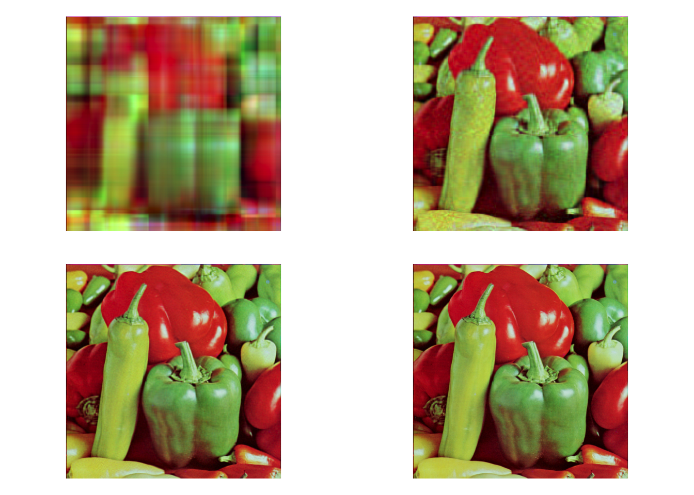

3.5 Low-rank approximation
One of the reasons the SVD is so widely used is that it can be used to find the best low rank approximation to a matrix. Before we discuss this, we need to define what it means for some matrix \(\mathbf B\) to be a good approximation to \(\mathbf A\). To do that, we need the concept of a matrix norm.
3.5.1 Matrix norms
In Section 2.3.1 we described norms on vectors. Here will extend this idea to include norms on matrices, so that we can discuss the size of a matrix \(||\mathbf A||\), and the distance between two matrices \(||\mathbf A-\mathbf B||\). There are two particular norms we will focus on. The first is called the Frobenious norm (or sometimes the Hilbert-Schmidt norm).
Note that the Frobenius norm is invariant to rotation by an orthogonal matrix \(\mathbf U\): \[\begin{align*} ||\mathbf A\mathbf U||_F^2 &= \operatorname{tr}(\mathbf U^\top \mathbf A^\top \mathbf A\mathbf U)\\ &=\operatorname{tr}(\mathbf U\mathbf U^\top \mathbf A^\top \mathbf A)\\ &= \operatorname{tr}(\mathbf A^\top\mathbf A)\\ &= ||\mathbf A||_F^2. \end{align*}\]
Proof. Using the (non-compact) SVD \(\mathbf A= \mathbf U\boldsymbol{\Sigma}\mathbf V^\top\) we have \[||\mathbf A||_F=||\mathbf U^\top \mathbf A||_F = ||\mathbf U^\top \mathbf A\mathbf V||_F = ||\boldsymbol{\Sigma}||_F=\operatorname{tr}(\boldsymbol{\Sigma}^\top\boldsymbol{\Sigma})^\frac{1}{2}=\left(\sum \sigma_i^2 \right)^\frac{1}{2}.\]
Proof. By Proposition 3.8.
3.5.2 Eckart-Young-Mirsky Theorem
Now that we have defined a norm (i.e., a distance) on matrices, we can think about approximating a matrix \(\mathbf A\) by a matrix that is easier to work with. We have shown that any matrix can be split into the sum of rank-1 component matrices \[\mathbf A= \sum_{i=1}^r \sigma_i \mathbf u_i \mathbf v_i^\top\] We’ll now consider a family of approximations of the form \[\begin{equation} \mathbf A_k = \sum_{i=1}^k \sigma_i \mathbf u_i \mathbf v_i^\top \tag{3.3} \end{equation}\] where \(k<=r=\operatorname{rank}(\mathbf A)\). This is a rank-k matrix, and as we’ll now show, it is the best possible rank-k approximation to \(\mathbf A\).
Proof. The last part follows from Propositions 3.11 and 3.10.
Non-examinable: this is quite a tricky proof, but I’ve included it as its interesting to see. We’ll just prove it for the 2-norm. Let \(\mathbf B\) be an \(n\times p\) matrix of rank \(k\). The null space \(\mathcal{N}(\mathbf B)\subset\mathbb{R}^p\) must be of dimension \(p-k\) by the rank nullity theorem.
Consider the \(p \times (k+1)\) matrix \(\mathbf V_{k+1}=[\mathbf v_1\; \ldots \;\mathbf v_{k+1}]\). This has rank \(k+1\), and has column space \(\mathcal{C}(\mathbf V_{k+1})\subset \mathbb{R}^{p}\). Because \[\dim \mathcal{N}(\mathbf B)+\dim \mathcal{C}(\mathbf V_{k+1})=p-k+k+1=p+1\] we can see that \(\mathcal{N}(B)\) and \(\mathcal{C}(V_{k+1})\) cannot be disjoint spaces (as they are both subsets of the p-dimensional space \(\mathbb{R}^p\)). Thus we can find \(\mathbf w\in \mathcal{N}(B)\cap\mathcal{C}(V_{k+1})\), and moreover we can choose \(\mathbf w\) so that \(||\mathbf w||_2=1\).
Because \(\mathbf w\in \mathcal{C}(\mathbf V_{k+1})\) we can write \(\mathbf w= \sum_{i=1}^{k+1}w_i \mathbf v_i\) with \(\sum_{i=1}^{k+1}w_i^2=1\).
Then \[\begin{align*} ||\mathbf A-\mathbf B||_2^2 &\geq ||(\mathbf A-\mathbf B)\mathbf w||_{2}^2 \quad \mbox{ by definition of the matrix 2-norm}\\ &=||\mathbf A\mathbf w||_2^2 \quad \mbox{ as } \mathbf w\in \mathcal{N}(\mathbf B)\\ &=\mathbf w^\top \mathbf V\boldsymbol{\Sigma}^2\mathbf V^\top \mathbf w\quad\mbox{ using the SVD} \mathbf A=\mathbf U\boldsymbol{\Sigma}\mathbf V^\top\\ &=\sum_{i=1}^{k+1}\sigma_i^2 w_i^2 \quad\mbox{ by substituting }\mathbf w= \sum_{i=1}^{k+1}w_i \mathbf v_i\\ &\geq \sigma_{k+1}^2 \sum_{i=1}^{k+1} w_i^2\quad\mbox{ as } \sigma_1\geq\sigma_2\geq\ldots\\ &= \sigma_{k+1}^2 \quad\mbox{ as } \sum_{i=1}^{k+1}w_i^2=1\\ &=||\mathbf A-\mathbf A_k||_2^2 \end{align*}\] as required
This best-approximation property is what makes the SVD so useful in applications.
3.5.3 Example: image compression
As an example, lets consider the image of some peppers from the USC-SIPI image database.
library(tiff)
library(rasterImage)
peppers<-readTIFF("figs/Peppers.tiff")
plot(as.raster(peppers))This is a \(512 \times 512\) colour image, meaning that there are three matrices \(\mathbf R, \mathbf B,\mathbf G\) of dimension \(512\times 512\)) giving the intensity of red, green, and blue for each pixel. Naively storing this matrix requires 5.7Mb.
We can compute the SVD of the three colour intensity matrices, and the view the image that results from using reduced rank versions \(\mathbf B_k, \mathbf G_k, \mathbf R_k\) instead (as in Equation (3.3)). The image below is formed using \(k=5, 30, 100\), and \(300\) basis vectors.
svd_image <- function(im,k){
s <- svd(im)
Sigma_k <- diag(s$d[1:k])
U_k <- s$u[,1:k]
V_k <- s$v[,1:k]
im_k <- U_k %*% Sigma_k %*% t(V_k)
## the reduced rank SVD produces some intensities <0 and >1.
# Let's truncate these
im_k[im_k>1]=1
im_k[im_k<0]=0
return(im_k)
}
par(mfrow=c(2,2), mar=c(1,1,1,1))
pepprssvd<- peppers
for(k in c(4,30,100,300)){
svds<-list()
for(ii in 1:3) {
pepprssvd[,,ii]<-svd_image(peppers[,,ii],k)
}
plot(as.raster(pepprssvd))
}
You can see that for \(k=30\) we have a reasonable approximation, but with some errors. With \(k=100\) it is hard to spot the difference with the original. The size of the four compressed images is 45Kb, 345Kb, 1.1Mb and 3.4Mb.
You can see further demonstrations of image compression with the SVD here.
We will see much more of the SVD in later chapters.